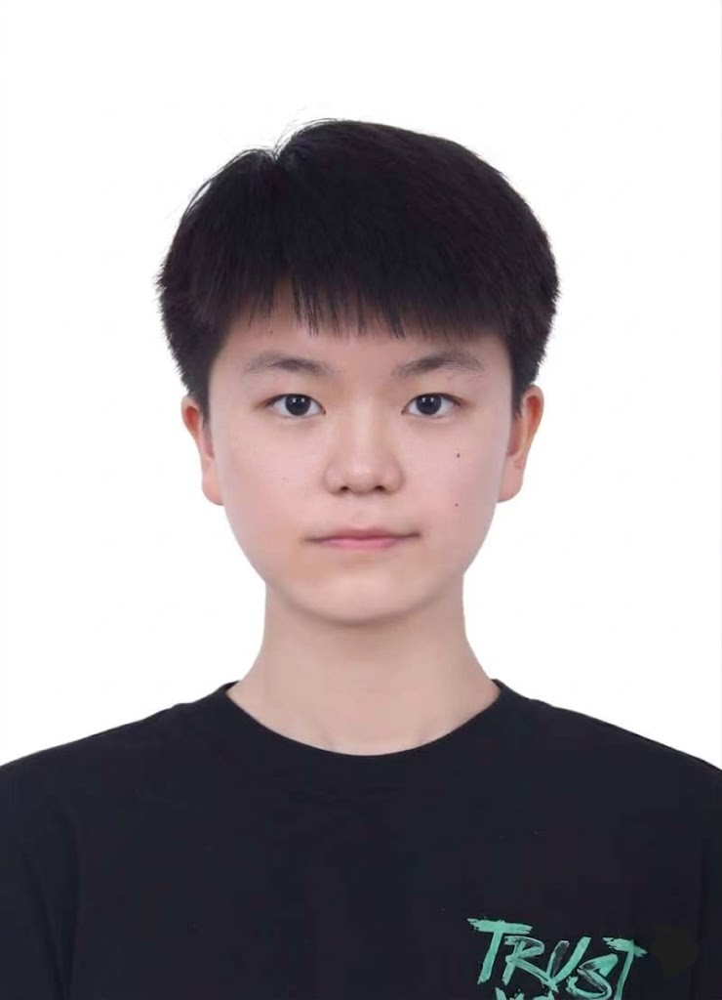

Peking University
B.S. in Computer Science and Technology
Selected coursework: Large Language Models, Introduction to Artificial Intelligence, Computational Photography, Natural Language Processing, Introduction to Computer Vision.
Peking University - Computer Vision - Generative AI
Undergraduate Student - Computer Science and Technology
I am a junior undergraduate student majoring in Computer Science and Technology at Peking University. My research interests center on generative AI, including image generation and video generation, and I hope to further explore world models in future research.
I previously worked as a research intern at the Camera Intelligence Lab, advised by Prof. Boxin Shi, and at VIE Group with Prof. Tingting Jiang on visual benchmark construction for multimodal evaluation. I am currently seeking new research internship opportunities.

B.S. in Computer Science and Technology
Selected coursework: Large Language Models, Introduction to Artificial Intelligence, Computational Photography, Natural Language Processing, Introduction to Computer Vision.
* denotes equal contribution.
2026
European Conference on Computer Vision (ECCV), 2026. Accepted.